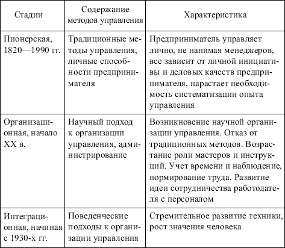
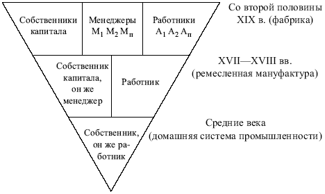
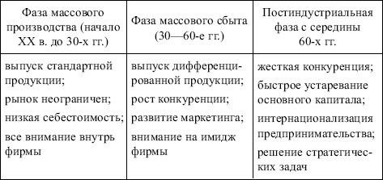

Управление, прежде чем оно оформилось в систематизированную научную дисциплину и профессию, прошло многовековой путь и признано самостоятельной областью деятельности человека только лишь в XX в. (табл. 1.1).
В условиях индивидуальной (или семейной) организации производства управление осуществлялось традиционными унаследованными приемами, неизменными на протяжении многих поколений. При принятии управленческих решений преобладала интуиция.
Возникновение и объективная необходимость управления как самостоятельного вида деятельности обусловлена общественным разделением труда, развитием кооперации и увеличением масштабов производства (рис. 1.1).
Первые работы, в которых сделана попытка научного обобщения накопленного опыта, были ответом на потребности развития в условиях промышленной революции.
Эволюция управления как научная дисциплина не представляла собой серии последовательных шагов вперед. Успехи в теории и практике управления всегда зависели от успехов в смежных областях, таких как инженерные науки, математика, психология, социология.
В развитии управленческой мысли и подходов к управлению все больше начинает преобладать интерес к бизнесу, осознание необходимости глубже постичь влияние внешних факторов на организационные структуры.

Таблица 1.1
Истоки возникновения современного менеджмента

Рис. 1.1. Рост масштабов производства
Методы и формы менеджмента постоянно изменяются и совершенствуются в соответствии с фазами промышленного развития (табл. 1.2).

Таблица 1.2
Фазы промышленного развития
Методы и формы менеджмента становятся все более связанными с проблематикой продвижения товара на рынок. Усиливается стратегическая ориентация менеджмента. В конкурентной борьбе выигрывает тот, кто раньше других отреагирует на изменение потребностей рынка.